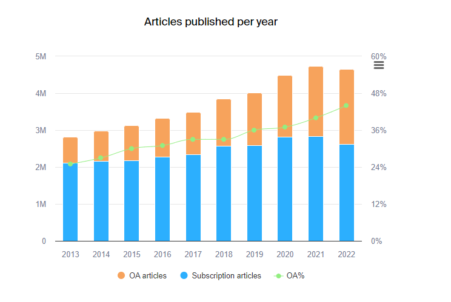

Plateformisation de l’édition scientifique- Projet Iren
Plateformes
Edition Scientifique
Evolution
Author
Christophe Benavent
Published
October 26, 2023
Ce vendredi les étudiant du Master Iren de l’Université paris -Dauphine PSL présentaient leurs réflexions sur le thème de l’année : la plateformisation de l’édition scientifique. En voici un bref compte-rendu et quelques remarques complémentaires.
Pour donner une dimension du marché, il est de l’ordre de 15 milliards de dollars et porte sur une production de l’ordre de 2.5 millions d’articles scientifiques passés aux feux de la révision. En cumul les bases bibliographiques concentrent jusqu’à 200 millions de références. S’il fallait traduire en livres qui pèsent en moyenne 500 pages, c’est un million de livres. A quatre centimètre d’épaisseur, c’est une bibliothèque de 40 km de longueur de rayon qui se construit chaque année et dont la taille double tout les 10 ans. On y observera la croissance de la part en Open Acc, qui représentent désormais la moitié des contenus.

Production globale d’articles scientifiques
Cet écosystème a une histoire qui retrace l’accumulation de couches spécifiques portant sur les différents domaine de l’activité scientifique : cherchez des références, organiser ces références, analyser une quantité croissante de publications, écrire plus efficacement, publier de manière standardisée.
Un marché concentré
Comme tout un chacun le sait, c’est un marché très concentré où trois groupes dominent : RLX, springer nature mais dont le géant est absent, présent sur le seul segment du livre scolaire. L’édition n’est pas que scientifique. En examinant les domaine d’activités stratégique de ces trois entités, on identifient des dormes de différenciation.
Cet oligopole est cependant contesté par le monde de l’open access, parfois militant mais aussi commercial : la contrepartie de l’ouverture à la lecture, est le financement par les auteurs, s’ils travaillaient gratuitement pour les éditeurs, voilà qu’ils payent pour être publiés. Un nouveau modèle émerge.
library(tidyverse)
-- Attaching core tidyverse packages ------------------------ tidyverse 2.0.0 --
v dplyr 1.1.3 v readr 2.1.4
v forcats 1.0.0 v stringr 1.5.0
v ggplot2 3.4.2 v tibble 3.2.0
v lubridate 1.9.2 v tidyr 1.3.0
v purrr 1.0.1 -- Conflicts ------------------------------------------ tidyverse_conflicts() --
x dplyr::filter() masks stats::filter()
x dplyr::lag() masks stats::lag()
i Use the conflicted package (<http://conflicted.r-lib.org/>) to force all conflicts to become errors
library(readr)library(ggthemes)
Warning: package 'ggthemes' was built under R version 4.0.5
library(viridis)
Warning: package 'viridis' was built under R version 4.0.5
ggsave("density.jpg", width =28, height =20, units ="cm")
Les éditeurs
Ils étaient là avant le numérique, il sont très différents, certains cumulent des milliers de revues, d’autres quelques centaines de manière locale. Elsevier BV domine avec une production de l’ordre de 900 000 articles par an, Springer suit avec 500 000, Wiley est le 3 ème dépassé par le modèle Open Access de MDPI.En quatrième position Taylor et Francis qui est rattrapé par Frontiers, l’autre prodige de l’open access mais aussi du monde des revues prédatrice.
On retrouve à une seconde échelle les sociétés savantes,de vielles et solides institution comme l’ IEEE et deux pôles émergeant : l’Inde et l’Egypte. Peut-il y avoir un retour des langues majeures ?
Rows: 180 Columns: 9-- Column specification --------------------------------------------------------
Delimiter: ","
chr (2): Publisher, NumberofOAJournals
dbl (6): NumberofJournals, NumberofArticles, NumberofOAArticles, 5-YearCited...
lgl (1): Publisher short
i Use `spec()` to retrieve the full column specification for this data.
i Specify the column types or set `show_col_types = FALSE` to quiet this message.
# Color-blind safe colorslibrary(colorspace)
Warning: package 'colorspace' was built under R version 4.0.5
labs(x=NULL, y="Nombre d'articles", title ="Evolution du nombre d'articles publiés par revue")
$x
NULL
$y
[1] "Nombre d'articles"
$title
[1] "Evolution du nombre d'articles publiés par revue"
attr(,"class")
[1] "labels"
Les bouquets de publications
Pour distribuer ce volume de publications, la solution des bouquets de publications s’est rapidement imposée, et notamment aux bibliothèques qui les financent, à des prix parfois percus commentr excessi*fs (voir l’actu).
Comme chaque bouquet couvre un champs partiels, le multi-homing est encouragé au prix de dé-duplications.
Ils permettent au chercheurs des institutions abonnées d’accéder depuis leur écran à un vaste empan de littérature. Le business model est fondé sur le paiment d’abonnement par les bibliothèques et les centres de documentations.Et s’appuie sur une faible sensibilité au prix, les chercheurs ont besoin de toutes les sources?
Proquest est un exemple, Jstor une autre sorte d’autorité dans le domaine économique, Cairn est un exemple local, français assez réussi mais limité, encouragé par les éditeurs français il ne peut prétendre à l’échelle globale. Il a un sens pour les humanités, ce l’est moins pour les science
L’enjeu de l’indexation
Le chercheur ne veut pas choisir entre les revues, ni même entre les bouquets de publication, mais s’il arrive qu’il les refuse par le biais de ses institutions. Il a besoin de pouvoir établir de manière exhaustive.
Les plateformes de références. Scopus, Web of science se développent avec la scientométrie L’une d’elle joue un rôle clé : google scholar
Accéder aux ressources c’est bien, les gérer c’est mieux
La prolifération et la concentration des bases de données pose un nouveau problème aux utilisateurs, si l’accès à l’information est aisé, il est utile aussi de disposer de nouveaux outils pour brasser des boisseaux de références. Ce sont les outils de référencement qui ont bénéficié de la normalisation des références bibliographiques. Nous reviendrons un plus plus loin du le rôle dans standard dans la plateformisation de cette industrie. Ce qui est essentiel c’est l’exhaustivité.
Mais même disposant d’un tel outil : une plateforme qui référence toutes mles connaissances qui méritent d’être connue, il faautà l’échelle de chaque chercheurs, d’outils qu permettent se circuler dans une base bibliographique qui re prenesentent décormais des centaines de références.
Et ce n’est pas u hasard qu’on emerger dans les années …XX des outils de référencement qui sont de parfaits complémentaires. Au moins trois outils Zotero endnotes Mendalay ont émergé avec des positionnement distinctifs,
les sytèmes de ranking
Le régime de la compétition s’est institué très tôt. Il se constitue sur une métrique de citation et a conduit rapidement dès lors que les vbases de données étaient suffisantes, à des pratiques de ranling. ON connait shanghai mais dans le monde des revues scimago est fondamental.
Si on classe les revues, on classe aussi les auteurs
scitlit
repository
Il y a toujours eu une tradition de Working Paper, souvent publié localement par les centres de recherches. Une est pratique issu de la numérisation est la constitution d’archive s Mais aussi les pre print pour passer outre à la durée des évaluation.
Arxiv avant tout,
en economie SSRN ou les repository HAl
Se promouvoir dans les réseaux
les réseaux sociaux scientifiques Research Gate, Academia sont apparu en 2010 couvrant un nouveau besoin : celui de partager ses recherches pour accélérer le rythme des citations, ils bénéficient de l’extension de l’open access qui permet aux chercheurs de proposer en plein texte ses productions. Ils peuvent concurrencer les “repositories” et contribuer à l’érosion des plateformes de distribution. Ils en sont aussi les complémentaires pour autant que les premiers aient des politiques d’open accès, et forme des canaux de communication spécifiques qui cible l’entourage proche du chercheur et un peu plus largement son “collège invisible”. Une distribution par capillarité des contenus.
En terme de portée Academia se prévaut de 175 millions d’utilisateurs, de 100 millions d’articles et de couvrir 40% des universitaire tandis que ResearchGate se concentre sur 25 millions d’utilisateur actifs et autant d’articles. Leur modèle est pour le premier de type freemium, et publicitaire pour le second.
Les bénéfices qu’ils apportent aux utilisateur s’appuient sur de nombreux algorithmes de recherche et de tri, de recommandation que ce soit d’articles ou de chercheurs, de suivi des citations, ce bien si précieux de l’ère digitale des bibliothèques, et pardessus tout, profitant de leurs échelles des systèmes de scoring des chercheurs. L’indexation est automatique, une approche proactive du référencement des articles est adoptée, se passant en partie de l’activité volontaire des utilisateurs. Le prix à payer est celui d’une exposition à un bombardement intensif de notifications dont le rôle est de générer un niveau d’activité élevé.
Ils jouent un rôle d’identité numérique à l’instar d’ORCID ou de google Scholar, ou de Mendeley.
Se promouvoir dans le monde non académique
Si le “publish or perish” est plus que jamais d’actualité, il n’est peut-être plus suffisant, il faut en plus du rayonnement. C’est toute l’intelligence d’un modèle comme The conversation, d’offrir une tribunes aux chercheurs à la fois directe, en étant lu directement et indirectement en étant repris par les médias. La plateforme se prévaut de 21.5 millions d’utilisateur mensuel du site, et une audience de 64.2 millions en incluant les re-publications. 87% des lecteurs ne sont pas académiques. C’est en quelque sorte une tâche d’éditorialisation qui est assurée. The science Media center s’adresse non seulement aux scientifiques, mais aussi et surtout aux journalistes et aux services de presse des institution scientifiques, 2002
Un moteur de la plateformisation est l’émergence de standards
Cette évolution n’aurait pu se faire sans un minimum d’interopérabilité, et le rôle des standards de ce point de vue est essentiel : pdf, DOI, pour n’en prendre que deux exemples qui ont été étudiés par nos étudiant
le DOI, et l’ISSN, sont les plaques d’immatriculations des publications. Leur unicité permet de créer des registres quasi exhaustifs,
le pdf d’origine privé, Adobe, lui aussi est devenu un standard, notamment dans sa capacité à distinguer le contenu des mises en formes;
IL Y A D4AUTRE STANTARD PAR EXEMPLE LA MISE ENforme bibliographiquze, RIS
du co^té des auteurs il y a orcid
Lire plus et mieux, de manière systématique
la vague des IA, et la prolifération de plateforme de lecture.
Elargir le point de vue
Le rôle central de git hub, et des langages.
L’open data et les dataverses
en conclusion
la plateformisation c’est
la virtualisation du document et son interopérabilité, le document de recherche est une chaine de caractères, ue structure , des méta données.
la comptabilité des documents et de leur citations, des mécanismes de réputation qui ont des effets d’attachement préférentiel et conduisant à des conséquence d’inégalité d’(échelle)
une production acfdrue qui demande non seulement la sélection mais la synthèse; le rôle cxlé des résumés.